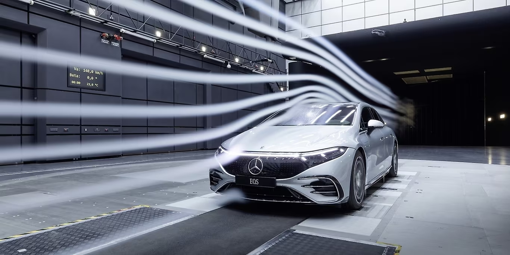
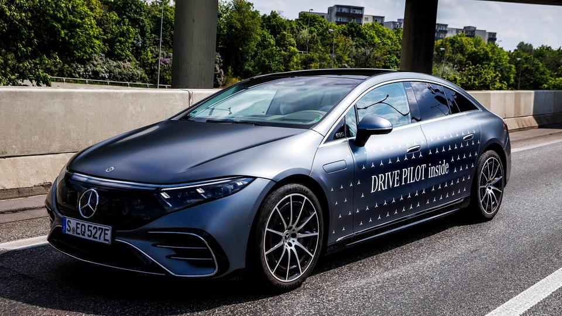
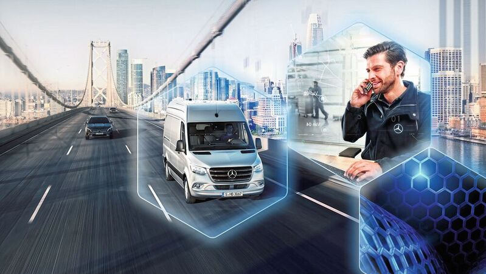
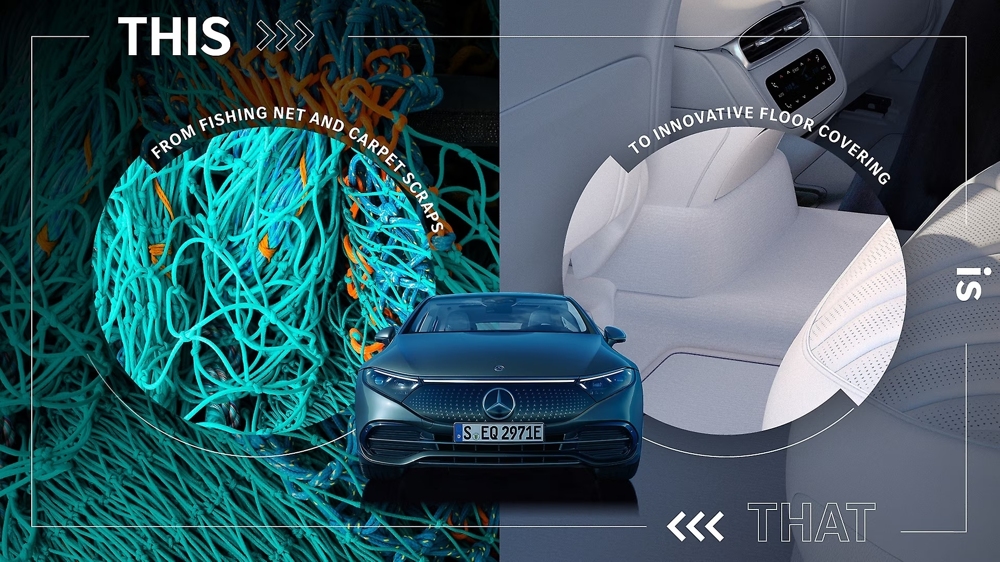
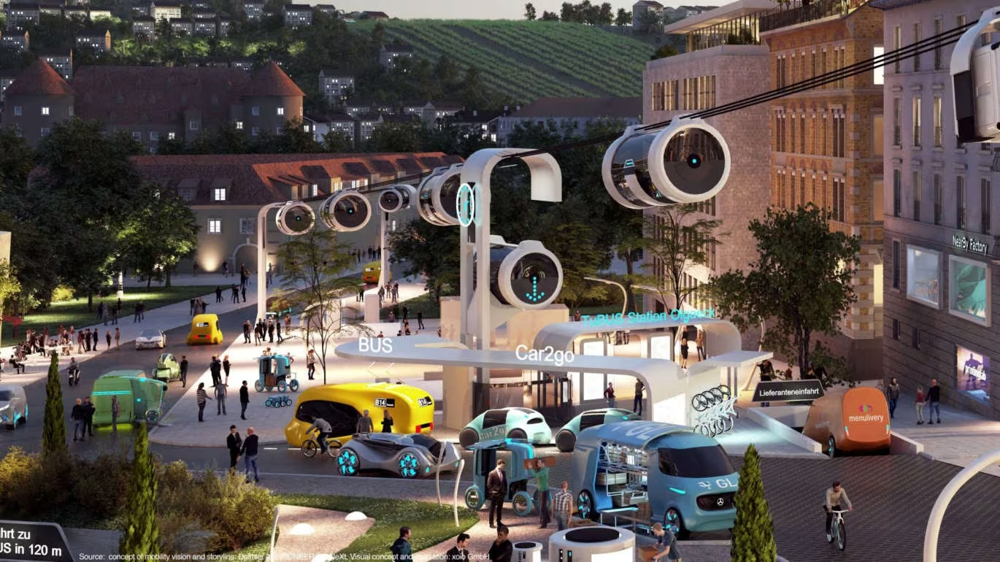

Die Zukunft von Mercedes-Benz wird stark von der Elektrifizierung geprägt sein. Das Unternehmen setzt auf innovative Technologien, um eine breite Palette von Elektrofahrzeugen anzubieten. Mit Projekten wie der EQ-Reihe strebt Mercedes nachhaltige Mobilität an und setzt sich das Ziel, bis zu einem bestimmten Jahr einen Großteil seines Fahrzeugportfolios elektrisch anzubieten.
Ein weiterer Schwerpunkt für die Zukunft von Mercedes liegt auf autonomen Fahrzeugen und künstlicher Intelligenz. Mercedes investiert intensiv in die Entwicklung von Fahrerassistenzsystemen und autonomem Fahren. Diese Projekte sollen nicht nur die Sicherheit im Straßenverkehr verbessern, sondern auch den Komfort und die Effizienz für die Insassen steigern.
Die Zukunft von Mercedes wird durch digitale Vernetzung und Konnektivität geprägt sein. Projekte zur Integration von fortschrittlichen Infotainment-Systemen, Over-the-Air-Updates und Cloud-Services sollen das Fahrerlebnis revolutionieren. Mercedes strebt danach, seine Fahrzeuge zu mobilen Plattformen zu machen, die nahtlos mit anderen digitalen Diensten und Geräten interagieren.
Mercedes setzt auf innovative Materialien und Designs, um die Zukunft der Automobilbranche mitzugestalten. Projekte zur Entwicklung leichterer und gleichzeitig robuster Materialien sollen die Effizienz der Fahrzeuge steigern und gleichzeitig die Umweltauswirkungen reduzieren. Das Design spielt eine Schlüsselrolle bei der Schaffung von Fahrzeugen, die nicht nur funktional, sondern auch ästhetisch ansprechend sind.
Neben Elektrofahrzeugen arbeitet Mercedes an Projekten im Bereich nachhaltiger Mobilitätskonzepte. Carsharing, Ride-Hailing und andere innovative Modelle werden erforscht, um die Flexibilität und Effizienz der Mobilität zu verbessern. Mercedes plant, nicht nur Fahrzeuge anzubieten, sondern auch umfassende Dienstleistungen, die die Anforderungen einer sich wandelnden urbanen Mobilitätslandschaft erfüllen.
